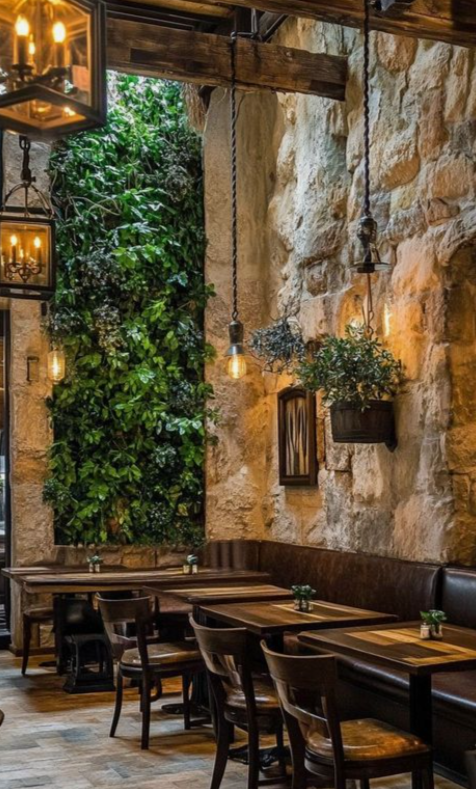
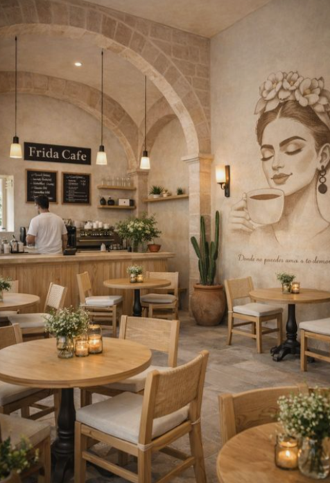
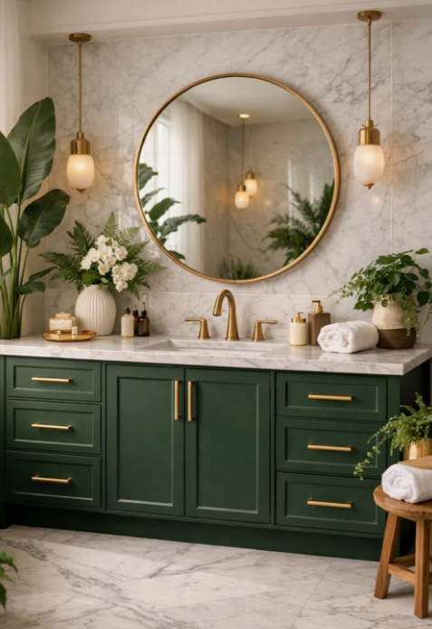
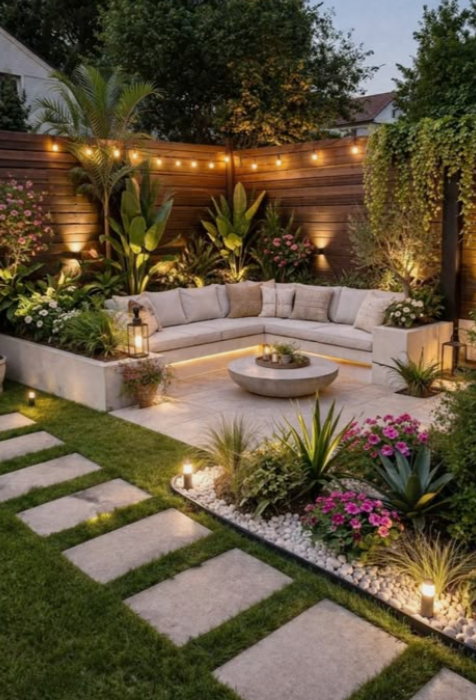
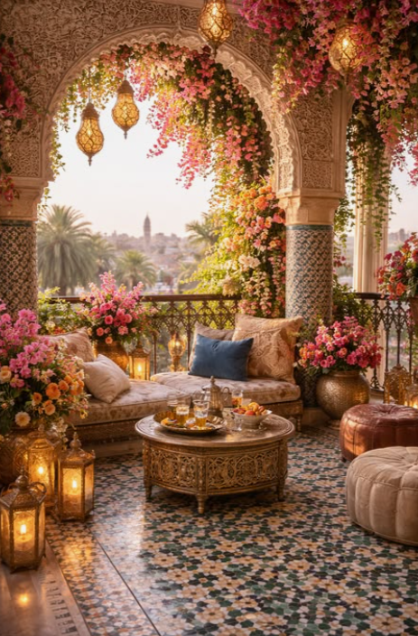
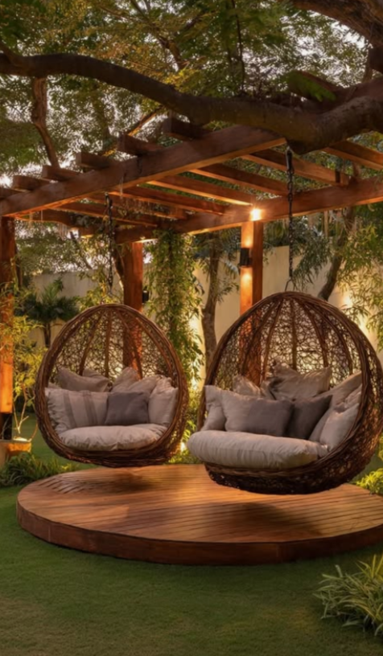
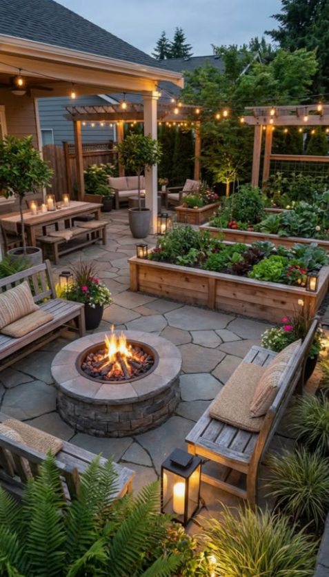

Palvelumme
Liiketilojen sisustussuunnittelu
Suunnittelemme viihtyisiä ja käytännöllisiä liiketiloja yritysten tarpeisiin.
Puutarhasisustus
Luomme kauniita ja toimivia puutarhaympäristöjä koteihin ja yrityksille
Tutustu töihimme
Liiketilojen sisustus




Puutarhasisustus




Responsiivinen väri
Muuta selainikkunan kokoa ja katso, miten taustaväri vaihtuu.